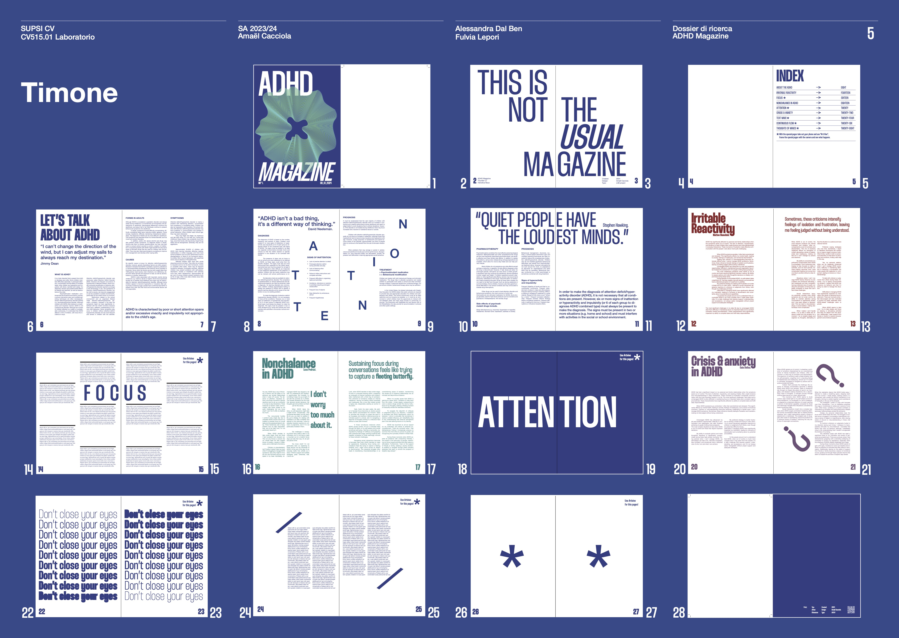
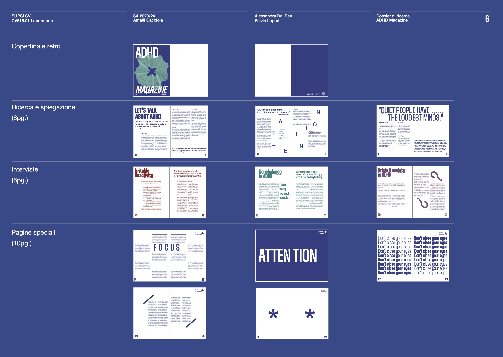

← Tutti i lavoriADHD
ADHD
Magazine
Per un progetto scolastico ho creato una rivista sull’ADHD, con l’idea di sensibilizzare le persone. Come si può vedere dalla copertina, mi sono ispirato a una forma complessa per rappresentare anche la complessità del cervello. Ho usato un layout fluido che cambia per ogni pagina, e ho anche usato “pagine speciali” da usare con ArtiVive, per far capire alle persone come ci si può sentire. Tutto ciò che contiene è frutto della ricerca degli esperti. Le pagine con un asterisco sono pensate per essere usate con ArtiVive.

